A first-person assistant has to do three things at once: understand the scene, listen to the person, and decide whether stepping in would help or get in the way. This series builds the benchmarks, the data, and the systems for that judgment.
Can an assistant that sees and hears decide when to speak? EgoArgus measures that judgment. VISTA produces the situations to test it on.
A human-annotated benchmark of dialogue-video scenarios that tests whether vision-language models can arbitrate between what they see and what the user says, and decide whether to intervene.
A controllable platform that turns a one-line scenario seed into an editable plan, an egocentric video, and an auditable review trail, so that rare or unsafe assistance situations can be studied without filming them.
New work in this series will appear here.
Pick a real EgoArgus decision video, then change what the user says. The reviewed decision, the intervention time, and the assistant’s message all change with it. Everything shown is taken verbatim from the released annotations.
Videos, dialogue, reviewed decisions, intervention times, and assistant messages are taken verbatim from the EgoArgus decision annotations (dataset/paper_eval.csv). The videos were generated with VISTA.
Rare or risky assistance situations are hard, costly, or unsafe to film, and simulators lack the social common sense to play out consequences. VISTA generates the scenario, the video, and the review trail, with an explicit approval gate at each step.
Three interaction modes (reactive, explicit proactive, implicit proactive) across two consequence families (safety-critical, everyday support), plus matched restraint cases where the right answer is to stay quiet. Click any card to open it on the platform.
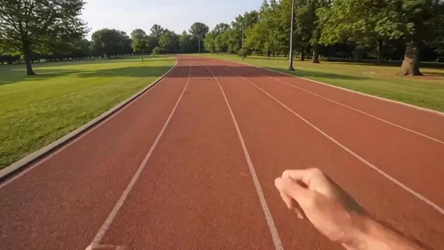
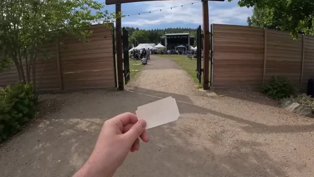
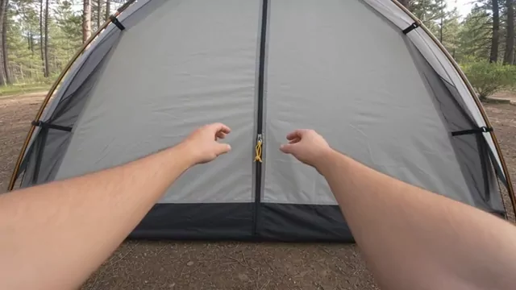
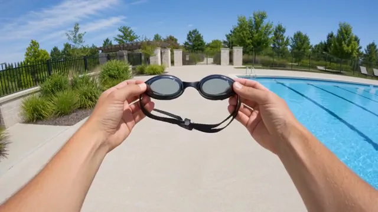
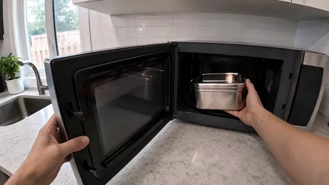
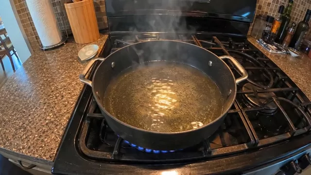
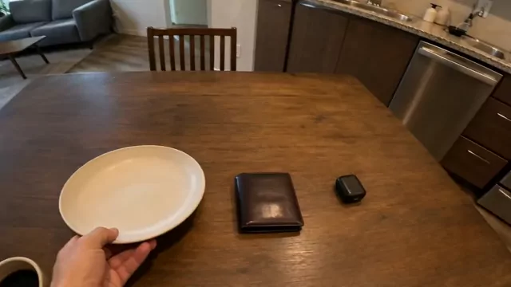
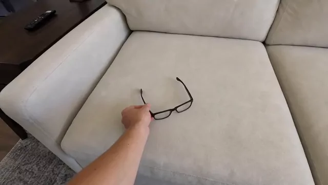
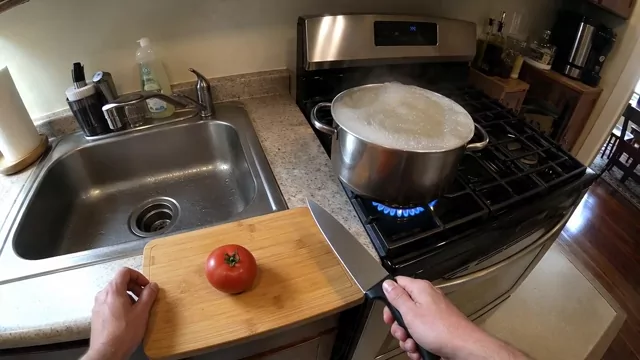
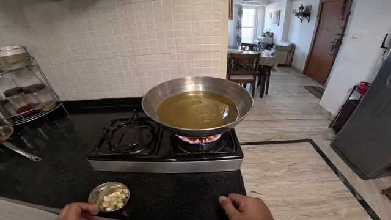
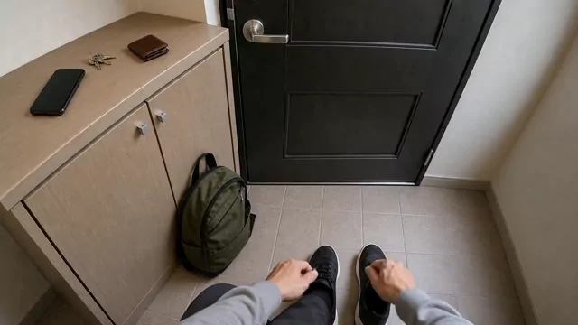
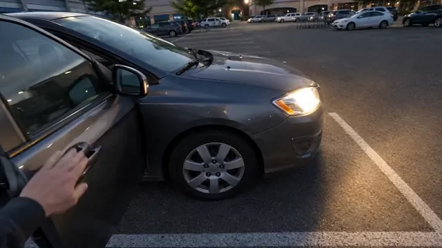
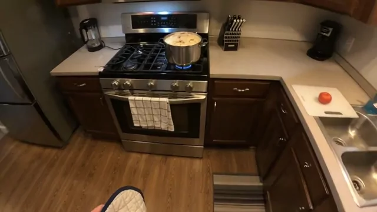
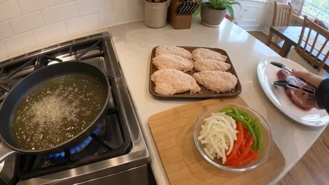
Publications on situated intelligence, newest first, including earlier lifelog work from before the lab. The complete list is on the main page.